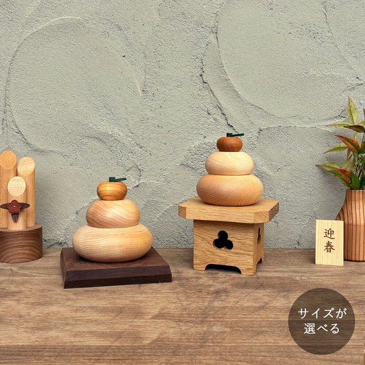
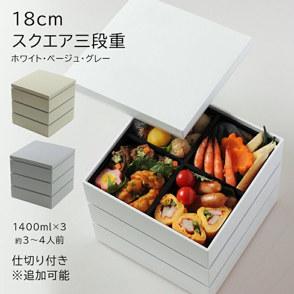
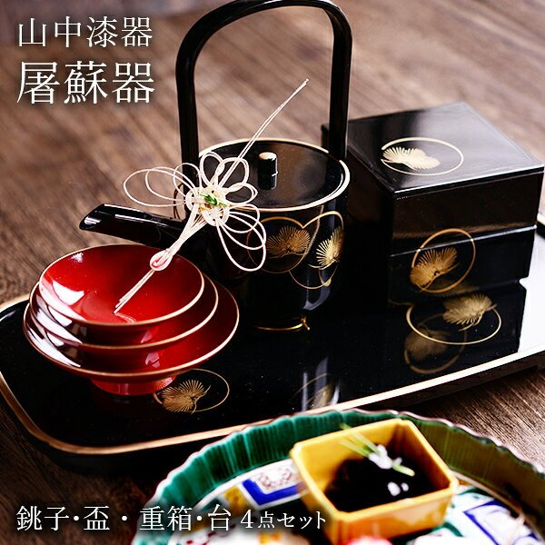
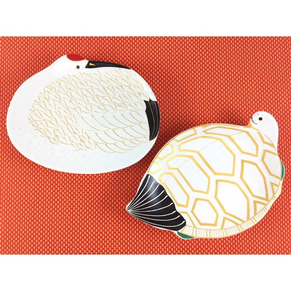
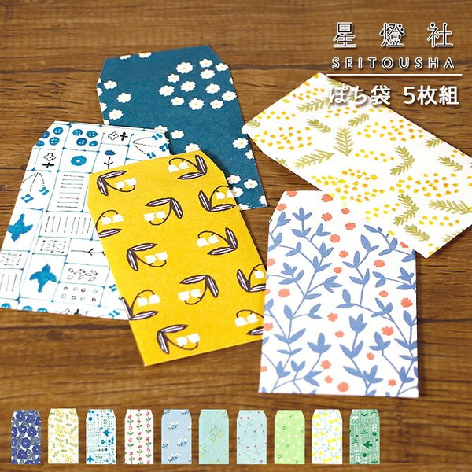
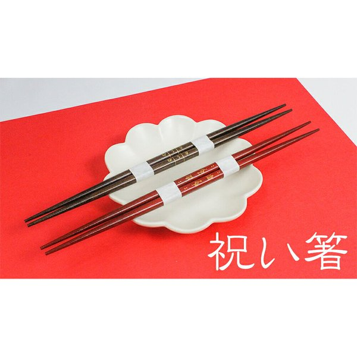
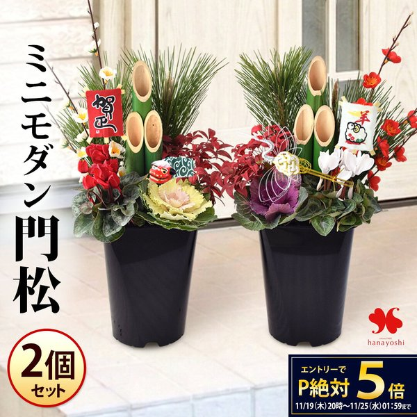
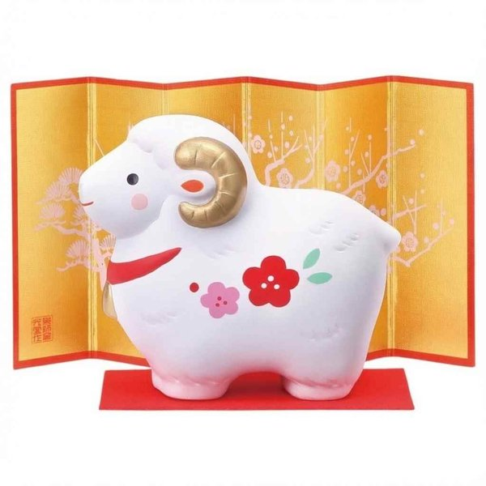
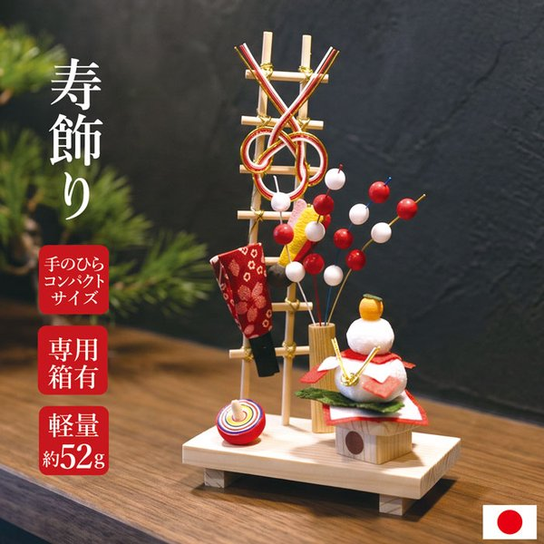

【2026年末から2027年のお正月準備】しめ縄飾り・木製鏡餅・おせち重箱・祝い皿・ぽち袋・祝箸10選｜秀〆・紀州漆器・山中漆器・有田焼・星燈社を実売価格で比較
お正月の準備は、12月に入ってからだと飾りも食器も品薄になります。しめ縄、鏡餅、重箱、祝い皿、ぽち袋。毎年使うものと、その年だけのものを分けて、11月のうちにそろえておくと、年末に慌てずに済みます。
選ぶ軸は3つです。「まず毎年使うもの」。木製の鏡餅、漆器の重箱、祝箸、屠蘇器は、一度買えば何年も使えます。「次にその年だけのもの」。しめ縄飾りや門松、干支の置物は、新年の干支に合わせて選びます。2027年の干支は未（ひつじ）です。「最後に食卓の縁起物」。鶴と亀の祝い皿や、紅白のぽち袋があると、正月らしさが一段上がります。
本記事では、楽天市場で人気・高評価のお正月準備・正月飾り10選を、実売価格とレビュー評価つきで写真付き紹介します。
| 順位 | 商品名 | ブランド | 最大の特徴・おすすめ理由 | 総合評価 |
|---|---|---|---|---|
| BEST 1 | 正月飾り モダンしめ縄飾り 9種類から選べる | 秀〆 | 9種類から選べる | 4.65 |
| BEST 2 | 鏡餅 木製 全8種類 | heart-box | 毎年そのまま飾れる | 4.85 |
| BEST 3 | スクエア三段重 6寸 約18cm | 紀州漆器（eemon） | 18cm角で詰めやすい | 4.40 |
| BEST 4 | 屠蘇器 4点セット | 耀松紋（山中漆器） | 徳利・盃など4点そろっている | 4.73 |
| BEST 5 | 銘々皿 錦雪衣金羽根鶴形／菱模様亀形 | 幸楽窯（有田焼） | 鶴と亀の縁起のいい形 | 4.91 |
| BEST 6 | ぽち袋 同柄5枚入り | 星燈社 | 5枚入りで使い切りやすい | 5.00 |
| BEST 7 | 祝箸 利休箸 松竹梅・鶴亀 5膳 | 川上商店 | 松竹梅・鶴亀の縁起柄 | 5.00 |
| BEST 8 | ミニモダン門松 2個セット | 花吉（hanayoshi） | 一対2個セット | 4.61 |
| BEST 9 | 干支 未（ひつじ） 2027年 置物 招福未 | 錦彩 | 2027年の干支・未の置物 | 4.72 |
| BEST 10 | 寿飾り ちりめん細工の正月飾り | 京ぜんび（kyozenbi） | 正月の縁起物が1つにまとまる | 4.94 |
正月飾り モダンしめ縄飾り 9種類から選べる

秀〆のしめ縄飾りは、玄関ドアに掛けられるモダンな正月飾りです。椿やランなどの造花をあしらったリース型で、9種類から選べます。マンションのドアや室内にも掛けられるサイズで、従来のしめ縄より壁に馴染む色合い。裏面のフックで掛けるだけなので、飾り付けの手間がありません。2027年の新年を迎える準備として、まず1つ目に選びやすい定番です。楽天市場での実売価格は約2,380円（2026年11月時点）。
- 9種類から選べる
- ドアに掛けるだけ
- マンションの玄関にも馴染む
- 造花なので、風雨の当たる屋外に長時間掛けるのは避ける
鏡餅 木製 全8種類

heart-boxの木製鏡餅は、本物の餅の代わりに飾れる木製のオブジェです。大小2つの丸い形に台座が付き、毎年そのまま飾れます。本物の鏡餅はカビやひび割れが気になりますが、木製なら手入れいらずで、翌年も出してこられます。8種類から選べ、サイズは卓上に置けるコンパクトなもの。鏡開きの習慣は残しつつ、飾りは長く使いたいという家に向いています。楽天市場での実売価格は約3,696円（2026年11月時点）。
- 毎年そのまま飾れる
- カビやひび割れの心配がない
- 卓上に置けるサイズ
- 予約販売の時期があるため、年末間際は在庫が少ない
スクエア三段重 6寸 約18cm

eemonのスクエア三段重は、約18cm角の白い三段重箱です。紀州漆器の日本製で、シール中蓋付き。仕切りは追加でき、おせちの段取りを自分で組み替えられます。角型なので四角いお重に詰めやすく、写真映えする白は和洋どちらの料理にも合います。運動会やお花見の弁当箱としても使えるので、正月以外にも出番があります。口コミが多く集まっている定番の形です。楽天市場での実売価格は約4,800円（2026年11月時点）。
- 18cm角で詰めやすい
- 仕切りを追加できる
- お正月以外にも使える
- 漆器なので食洗機は使えない
屠蘇器 4点セット

耀松紋の屠蘇器4点セットは、お正月に屠蘇を飲むための徳利や盃がそろった山中漆器のセットです。耀松紋は松をモチーフにした縁起のいい文様で、黒内朱の漆が正月の食卓に映えます。お屠蘇は一年の邪気を払うとされる習慣で、家族がそろって1杯ずつ回し飲みします。4点セットなので、初めてでも足りない道具がありません。実家に帰る前に1セットあると、正月の支度が整います。楽天市場での実売価格は約9,900円（2026年11月時点）。
- 徳利・盃など4点そろっている
- 山中漆器の日本製
- 縁起のいい耀松紋
- 手入れは手洗いが必要で、食洗機にはかけられない
銘々皿 錦雪衣金羽根鶴形／菱模様亀形

幸楽窯の銘々皿は、有田焼で縁起物をかたどった小皿です。ふっくらした鶴と亀の形に、金彩で羽根と甲羅の模様を描いています。12cmと13cmの2枚セットで、おせちを少しずつのせるのにちょうどいい大きさ。鶴と亀は長寿の象徴で、正月の食卓に縁起を添えます。白磁に金のラインが入るので、和食にも洋風の料理にも合わせられます。楽天市場での実売価格は約2,277円（2026年11月時点）。
- 鶴と亀の縁起のいい形
- おせちを少しずつのせられる
- 有田焼の日本製
- レビューは22件と少なく、金彩は食洗機で傷みやすい
ぽち袋 同柄5枚入り

星燈社のぽち袋は、和紙にレトロな柄を印刷した5枚入りのお年玉袋です。選べる柄が多く、1つの柄が5枚そろうので、兄弟や親戚の子に同じ柄で配れます。小さいお年玉や心づけに使いやすいサイズで、ポップなものからシックなものまでそろいます。毎年使い切れない袋が余る人でも、5枚単位なら無駄になりにくい。日本製の紙製品です。楽天市場での実売価格は約385円（2026年11月時点）。
- 5枚入りで使い切りやすい
- 柄を選べる
- 日本製の和紙
- レビューは11件と少なく、1枚あたりの単価は安くない
祝箸 利休箸 松竹梅・鶴亀 5膳

川上商店の祝箸は、正月の祝膳に使う両口の利休箸です。松竹梅や鶴亀、寿の文様が入った江戸唐木箸で、黒と赤の漆塗り。両口箸は神様と一緒に食事をするという意味があり、正月やお食い初め、結婚の祝いの席で使われます。5膳セットなので、家族がそろって使えます。使い捨ての割り箸より、毎年出して使える祝箸を1組持っておくと、正月の食卓が引き締まります。楽天市場での実売価格は約990円（2026年11月時点）。
- 松竹梅・鶴亀の縁起柄
- 毎年使える漆塗り
- 5膳セットで家族分そろう
- レビューは6件と少なく、漆なので手洗いして乾かす
ミニモダン門松 2個セット

hanayoshiのミニモダン門松は、玄関の両側に置く一対の門松です。松・竹・南天・葉牡丹を寄せ植え仕立てにしたもので、高さは玄関に置きやすいコンパクトサイズ。本格的な竹の門松は場所を取りますが、これならマンションのエントランスにも置けます。2個セットなので、左右に飾れば門松の形になります。正月の間だけ玄関を華やかにしたい人に向いています。楽天市場での実売価格は約7,980円（2026年11月時点）。
- 一対2個セット
- 玄関に置けるコンパクトサイズ
- 寄せ植え仕立て
- 生花なので、水やりと冷暖房の風を避ける管理が要る
干支 未（ひつじ） 2027年 置物 招福未

錦彩の干支置物は、2027年の干支である未（ひつじ）をかたどった小さな置物です。紅梅柄の彩色で、手のひらに載るサイズ。玄関や床の間、デスクの上に置けます。2026年は丙午（馬）ですが、年が明けると未年になるので、12月に入ったら2027年の干支に替えるのが一般的です。町内会や施設の配布品としても使われる定番の形で、価格も手頃です。楽天市場での実売価格は約470円（2026年11月時点）。
- 2027年の干支・未の置物
- 手のひらサイズで置き場所を選ばない
- 手頃な価格
- 陶器なので落とすと割れる
寿飾り ちりめん細工の正月飾り

京ぜんびの寿飾りは、ちりめん細工で作られた卓上の正月飾りです。餅花、羽根付きの独楽、鏡餅、橙、紅白の紙垂が1つにまとまり、手のひらサイズに正月の縁起物が詰まっています。水引の飾りが付き、玄関やリビング、床の間に置けます。本格的なしめ縄を飾る場所がない家でも、これ1つで正月の雰囲気が出ます。職人の手仕事で作られた日本製です。楽天市場での実売価格は約1,650円（2026年11月時点）。
- 正月の縁起物が1つにまとまる
- 手のひらサイズで置き場所を選ばない
- 日本製の手仕事
- レビューは18件と少なく、ちりめんは直射日光で色あせる
この記事の商品を買う前に、まずは無料で得する選択肢をチェック。どれも登録・利用は0円で、無料期間中に解約すれば料金はかかりません。読みたい雑誌がある人、ポイントを貯めたい人、アンケートなら気軽という人、それぞれに合うものを選べます。
初回31日無料・無料期間中に解約すれば0円 → 楽天ポイントモール｜登録無料で毎日ポイ活
買い物なしでもポイントが貯まる無料サービス → 楽天インサイト｜アンケートに答えてポイント
登録無料・すきま時間のアンケートで貯まる → 楽天カード｜年会費永年無料
新規発行・年会費ずっと0円 →
4つのサービスの違いと使い分けは「出費0円で得する！買わずにポイントが貯まる無料サービス厳選4選」でまとめています。
💡 まとめ：お正月準備と正月飾り10選の選び方
お正月の準備は、毎年使うものと、その年だけのものに分けると迷いません。毎年使うのは、heart-boxの木製鏡餅、紀州漆器のスクエア三段重、山中漆器の屠蘇器、川上商店の祝箸。どれも手入れをすれば何年も使えます。その年だけのものは、秀〆のモダンしめ縄飾りと花吉のミニ門松、2027年の干支である未（ひつじ）の錦彩の置物。食卓の縁起物は、有田焼 幸楽窯の鶴と亀の銘々皿、星燈社のぽち袋、京ぜんびの寿飾りを添えると、正月らしさが揃います。11月のうちに飾りと食器をそろえておくと、12月は料理に集中できます。
楽天市場では「5と0のつく日」や「お買い物マラソン」などのキャンペーンに合わせて購入すると、ポイント還元が最大化してお得に手に入ります。ぜひチェックしてみてくださいね。